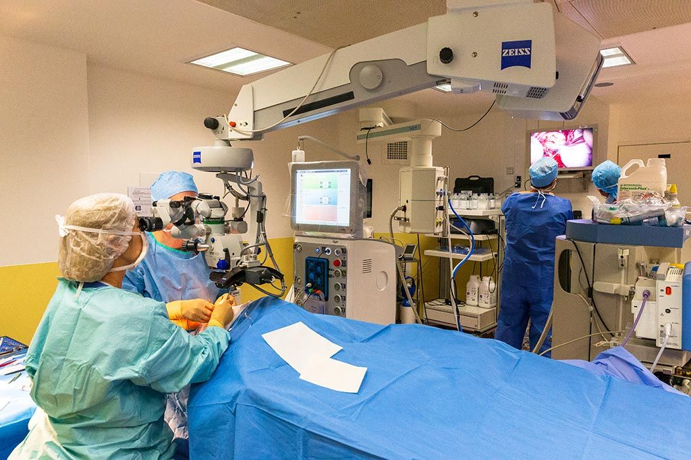

Information des patients
Pathologies
Les principales maladies prises en charge au cabinet : définition, traitement et conseils pratiques.
Éclairs lumineux, pluie de corps flottants, voile ou ombre dans le champ visuel ? Ces signes peuvent révéler un décollement de rétine : consultez en urgence.
Que faire en urgenceDécollement de rétine
Une urgence chirurgicale : la rétine se sépare de la paroi de l’œil.
Lire la ficheDéchirure de la rétine
Souvent l’étape avant le décollement, traitée au laser.
Lire la ficheHémorragie du vitré
Du sang dans l’œil, à explorer en urgence.
Lire la ficheTrou maculaire
Un trou au centre de la rétine, qui se referme par chirurgie.
Lire la ficheSyndromes maculaires
Membranes, œdèmes et hématomes de la macula.
Lire la ficheDMLA
Dégénérescence maculaire liée à l’âge : suivi et injections.
Lire la ficheDécollement postérieur du vitré
Corps flottants et éclairs lumineux à faire examiner.
Lire la ficheForte myopie
Un œil plus fragile, à surveiller régulièrement.
Lire la ficheCataracte
Le cristallin devient opaque et se remplace par un implant.
Lire la ficheGlaucome
Une atteinte silencieuse du nerf optique, à dépister tôt.
Lire la fiche
La chirurgie par endoscopie endoculaire
Les trois chirurgiens du cabinet pratiquent la vidéo-endoscopie endoculaire, qui permet de voir et d'opérer des zones de l'œil difficiles d'accès au microscope, notamment dans certains décollements de rétine compliqués et glaucomes réfractaires.